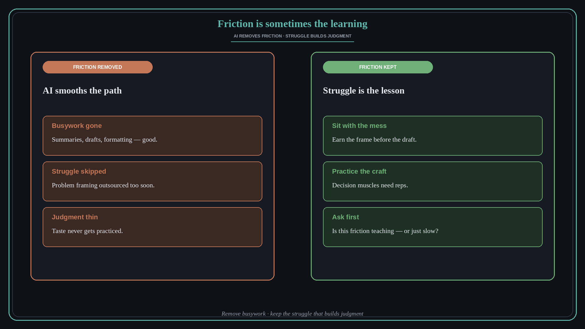

Friction is sometimes the learning
Source: Molly Graham (@molly_g)
original post
What it claims
Struggling is essential to learning. AI is extraordinarily good at removing friction. But sometimes the friction is the learning. Smooth paths can skip the struggle that builds judgment.
Why it matters for a PO
As a PO you will feel pressure to automate discovery write-ups, strategy drafts, and stakeholder prep. Useful — until the struggle was the point. Protect deliberate practice: framing problems yourself, sitting with messy data, and earning the taste bar before you outsource the hard part.
3 takeaways
- Not all friction is waste; some friction builds the skill you need next.
- Use AI to remove busywork — not the struggle that creates judgment.
- Ask before automating: “Is this friction teaching me, or just slowing me?”
Practice this week
Pick one recurring task you auto-delegate to AI. Do it manually once this week and write what the struggle taught you. Keep AI for the steps that were only busywork.